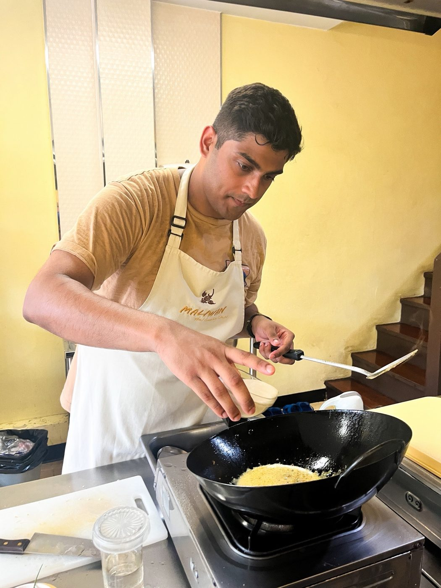

Recipes by Chef Vishal John
Recipes I actually cook
Med school taught me to cook fast, cheap, and healthy. The aspiring coffee shop owner in me can't resist a good dessert, though. These are my go-to recipes: weeknight mains, sauces and snacks I make on repeat, a few desserts, and the Thai and Southeast Asian dishes I fell in love with while traveling and at a cooking class in Thailand.
The Recipes
No recipes match that.